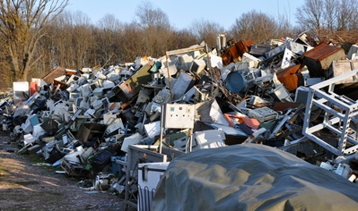

A Revolução Tecnológica
Nos últimos anos, a tecnologia tem evoluído em uma velocidade sem precedentes, trazendo inúmeros benefícios para a sociedade, como avanços na medicina, comunicação instantânea global, automação industrial e dispositivos cada vez mais inteligentes. No entanto, esse avanço acelerado também trouxe consigo uma consequência preocupante: o aumento do lixo eletrônico, ou e-lixo, que se tornou um dos maiores desafios ambientais da atualidade.
Ciclo rápido de consumo
Com o ritmo cada vez mais acelerado de inovações tecnológicas, o ciclo de vida dos dispositivos eletrônicos está ficando mais curto. Produtos como smartphones, tablets, laptops e eletrodomésticos inteligentes são atualizados constantemente, incentivando os consumidores a trocar seus aparelhos por modelos mais novos, muitas vezes com poucas diferenças funcionais. Esse comportamento impulsionado por estratégias de marketing e design de obsolescência programada resulta no descarte prematuro de milhões de dispositivos a cada ano.
De acordo com a Associação Brasileira de Empresas de Limpeza Pública e Resíduos Especiais (ABRELPE), o Brasil é o maior gerador de lixo eletrônico na América Latina, com mais de 2 milhões de toneladas produzidas anualmente. No contexto global, a Global E-Waste Statistics Partnership estima que mais de 53,6 milhões de toneladas de lixo eletrônico foram geradas em 2019, e esse número continua a crescer de forma alarmante, com previsão de atingir 74 milhões de toneladas até 2030.
E de acordo com o relatório da Global E-Waste Monitor 2020, o mundo gerou 53,6 milhões de toneladas de lixo eletrônico em 2019, um aumento de 21% em apenas cinco anos. Se mantido esse ritmo, estima-se que atingiremos 74 milhões de toneladas até 2030. Isso representa um enorme desafio para a sustentabilidade e o meio ambiente, já que menos de 20% desses resíduos são reciclados de forma adequada.
O que compreende o Lixo Eletrônico?
Lixo eletrônico inclui qualquer dispositivo que precise de eletricidade para funcionar e que tenha sido descartado ou deixado de ser usado. Isso abrange uma vasta gama de itens, como:
- Smartphones e Tablets
- Computadores e Periféricos (impressoras, teclados e mouses)
- Televisores e Monitores
- Eletrodomésticos (geladeiras, micro-ondas, máquinas de lavar)
- Dispositivos Vestíveis (smartwatches, pulseiras fitness)
- Pilhas e Baterias
- Componentes de Redes e Telecomunicações
Muitos desses dispositivos contêm materiais perigosos, como chumbo, mercúrio e cádmio, que representam sérios riscos ambientais e de saúde pública quando descartados de forma inadequada.
A importância da reciclagem e reuso
A reciclagem de lixo eletrônico é uma solução fundamental para reduzir os impactos negativos descritos acima. Reciclar corretamente os eletrônicos permite a recuperação de materiais valiosos e a redução da necessidade de extração de novos recursos. Além disso, muitos componentes podem ser reutilizados ou recondicionados, prolongando a vida útil dos dispositivos e diminuindo a quantidade de lixo gerada. Empresas como Apple, Dell e Samsung estão liderando iniciativas globais para melhorar o ciclo de vida dos produtos eletrônicos. A Apple, por exemplo, tem programas que permitem que os consumidores devolvam seus dispositivos antigos para reciclagem ou reuso. Além disso, a empresa se comprometeu a usar 100% de materiais reciclados ou renováveis em seus futuros produtos. Da mesma forma, a Dell oferece programas de reciclagem e recondicionamento que ajudam a reduzir o impacto ambiental.
Governos ao redor do mundo estão começando a reconhecer a importância de legislar sobre o lixo eletrônico. A União Europeia, por exemplo, implementou a Diretiva de Resíduos de Equipamentos Elétricos e Eletrônicos (WEEE), que responsabiliza os fabricantes pelo descarte adequado de seus produtos. No Brasil, o Plano Nacional de Resíduos Sólidos busca melhorar a gestão do lixo eletrônico, promovendo a reciclagem e a educação ambiental. Porém, muito ainda precisa ser feito para garantir que as soluções implementadas sejam amplamente acessíveis e eficazes. Políticas públicas fortes, juntamente com o compromisso de empresas e indivíduos, são essenciais para resolver o problema do lixo eletrônico de maneira sustentável.